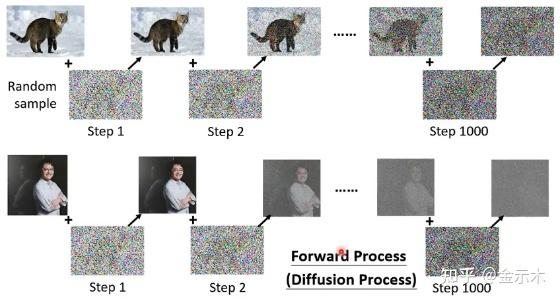

DDPM
Denoising Diffusion Probabilistic Models——从逐步去噪到一步加噪
钟祚栋 / 学习笔记
GO UP! Diffusion + RL学习 01 ↗
理解扩散模型时，可以从得分匹配、能量模型和朗之万采样的角度出发。但这篇笔记里，我更想沿着 DDPM 的概率建模过程，看看它为什么能一步步去噪。
DDPM 给我的感觉更像 VAE：它引入了多个中间变量，也就是不断加噪、不断去噪的过程。这样每一次只拟合一点，有点像把曲线分段处理。这个类比并不准确，但能帮助我理解为什么要把生成过程拆成许多小步。
PAPER · HO, JAIN & ABBEELDenoising Diffusion Probabilistic ModelsNeurIPS 2020 · arXiv:2006.11239 ↗
#整体思路
我们想从一张高斯噪声图开始，通过不断去噪，得到一张图像。但如何训练？如何引导去噪过程？
这也是图像生成的核心问题。Diffusion 和 GAN 给出了不同的方案：这里的扩散训练可以自己构造监督信号，把已知的噪声作为 noise prediction 模块的标签，再让网络学会去噪。GAN 则通过生成器与判别器之间的对抗来训练，并不采用这里的逐步加噪、去噪过程。
原文提到，也可以加入文本来引导生成。这属于条件生成的扩展；下面先只讨论原始 DDPM 的无条件图像生成。

原文中的前向过程示意图：逐步加噪，逐渐失去图像结构。
但是要注意：图中的噪声是逐步产生的，而在 DDPM 的实际训练中，任意一个中间图像都可以从 x0 出发，一步得到。这是我读这篇论文时特别想弄明白的一点。
一方面，这来自高斯噪声的性质；另一方面，这样不用为每次训练都模拟完整的加噪链，训练会更高效。更让我感兴趣的是：从 x0 到 xt 的这份噪声，恰好又出现在反向过程的均值里。下面就推一遍公式，看看前后两部分是怎么接上的。
#前向过程
前向过程就是加噪声。来自训练集的图像 x0 经过 T 次扰动，最终接近标准正态噪声。每一步只依赖前一步，因此它是一个马尔可夫过程：
q(x1:T∣x0)=t=1∏Tq(xt∣xt−1).
q(xt∣xt−1)=N(xt;1−βtxt−1,βtI).
这里 0<βt<1 是第 t 步预先设置的噪声方差。通过一个标准正态样本，就能写出 xt 与 xt−1 的关系：
xt=1−βtxt−1+βtzt,zt∼N(0,I).
上面两个公式是同一件事的两种写法：既可以理解为从高斯条件分布中采样，也可以理解为缩放上一张图像，再加上一份噪声。不同时间步的 zt 相互独立，图片大小始终不变。
为什么能够一步加噪？
先记：
αt=1−βt,αˉt=s=1∏tαs,αˉ0=1.
把 xt−1 展开一次：
xt=αtxt−1+βtzt=αtαt−1xt−2+αtβt−1zt−1+βtzt.
两个独立的零均值高斯噪声相加，协方差相加。因此，后面两项可以合并：
αtβt−1zt−1+βtzt=dαtβt−1+βtϵ=1−αtαt−1ϵ,ϵ∼N(0,I).
其中 =d 表示同分布。原来笔记里写的是“均值相同，方差可以相加”，更准确的条件是这些高斯噪声相互独立。
继续展开到 x0，就得到原文手写推导中的乘积形式：
xt=ds=1∏t(1−βs)x0+1−s=1∏t(1−βs)ϵ.
于是，任意时间步的直接采样公式为：
xt=αˉtx0+1−αˉtϵ,ϵ∼N(0,I).
q(xt∣x0)=N(xt;αˉtx0,(1−αˉt)I).
这里的 ϵ 是从 x0 直接构造 xt 时使用的合成噪声，与前面某一个单步的 zt 不是同一个变量。
展开推导：所有噪声项为什么恰好得到这个方差？
xt=αˉtx0+j=1∑tβjs=j+1∏tαszj.
空乘积取 1。利用独立性，噪声部分的协方差系数为：
j=1∑tβjs=j+1∏tαs=j=1∑t(s=j+1∏tαs−s=j∏tαs)=1−s=1∏tαs=1−αˉt.
所以这一整串噪声，在分布上可以替换成 1−αˉtϵ。
最后为什么接近纯噪声？
在 DDPM 论文的设置中，T=1000，βt 从 β1=10−4 到 βT=0.02 线性增长。因此 αt 逐渐减小，连乘得到的 αˉt 也越来越小：
αˉT≈0⟹q(xT∣x0)≈N(0,I).
前向过程逐步削弱原图、增加噪声，但对训练来说，重要的不只是终点，而是中间任意时间步都可以构造出“带噪图像—真实噪声”这一对监督信号。
#反向过程
前向过程从 xt−1 得到 xt，反向过程则希望从 xt 得到 xt−1。我们可以先从贝叶斯公式入手。这里原文参考了苏神的讲解，非常详细透彻，respect。
原文参考 · 科学空间苏剑林的扩散模型推导原文所引用的贝叶斯与高斯配方过程 ↗
q(xt−1∣xt)=q(xt)q(xt∣xt−1)q(xt−1).
但这里的边缘分布并不好求。训练时有原图 x0，因此先给各项加上这个条件：
q(xt−1∣xt,x0)=q(xt∣x0)q(xt∣xt−1,x0)q(xt−1∣x0)=q(xt∣x0)q(xt∣xt−1)q(xt−1∣x0).
第二行使用了前向过程的马尔可夫性：知道 xt−1 之后，下一步不再额外依赖 x0。右边这三个分布，都已经能写出来：
q(xt∣xt−1)q(xt−1∣x0)q(xt∣x0)=N(xt;αtxt−1,βtI),=N(xt−1;αˉt−1x0,(1−αˉt−1)I),=N(xt;αˉtx0,(1−αˉt)I).
下面的推导先取 t≥2。我们的目标是把这个后验整理成高斯分布，求出均值和方差：
q(xt−1∣xt,x0)=N(xt−1;μ~t(xt,x0),β~tI).
xt−1=μ~t(xt,x0)+β~tz,z∼N(0,I).
把高斯分布代入，再对 xt−1 配方
原笔记是把三个高斯密度逐项代入，然后合并系数和指数。这里保留这条推导主线，把长式子放在下面：
展开推导：代入密度、合并二次项与一次项
记样本维度为 d，则：
q(xt−1∣xt,x0)=[2πβt(1−αˉt−1)1−αˉt]d/2exp[−21R(xt−1)].
为了看得清楚，令 y=xt−1，并把指数中的各项写成：
R(y)=βt∥xt−αty∥22+1−αˉt−1∥y−αˉt−1x0∥22−1−αˉt∥xt−αˉtx0∥22.
按 y 展开：
R(y)=At∥y∥22−2bt⊤y+Ct.
Ct 与 y 无关。二次项的系数为：
At=βtαt+1−αˉt−11=βt(1−αˉt−1)αt(1−αˉt−1)+βt=βt(1−αˉt−1)1−αˉt.
一次项对应的向量为：
bt=βtαtxt+1−αˉt−1αˉt−1x0.
完成平方：
R(y)=Aty−Atbt22+Ct′.
因此，高斯后验的方差系数是 At−1，均值是 bt/At。这也补全了原手写图里从“系数合并”直接读出方差的中间步骤。
最后得到：
β~t=1−αˉt1−αˉt−1βt.
μ~t(xt,x0)=1−αˉtαˉt−1βtx0+1−αˉtαt(1−αˉt−1)xt.
方差只和预先设置的 α、β 有关；但均值中既有 xt，也有 x0。所以接下来就是要去掉显式的 x0：生成时，我们并不知道原图是什么样子。
#为什么预测噪声？
再拿出前向的一步加噪公式：
xt=αˉtx0+1−αˉtϵ.
把它移项，就能用 xt 和噪声表示 x0：
x0=αˉtxt−1−αˉtϵ.
代回刚才求出的后验均值，化简得到：
μ~t(xt,x0)=αt1(xt−1−αˉtβtϵ).
展开推导：代入后，两个 xt 的系数如何合并？
μ~t=αt(1−αˉt)βt(xt−1−αˉtϵ)+1−αˉtαt(1−αˉt−1)xt=αt(1−αˉt)βt+αt(1−αˉt−1)xt−αt1−αˉtβtϵ=αt1(xt−1−αˉtβtϵ).
最后一步使用了 βt+αt(1−αˉt−1)=1−αˉt。
这个式子告诉我们：如果知道从 x0 到 xt 的合成噪声，就能确定这个后验均值。这就是为什么 DDPM 可以加入一个神经网络，去拟合这份噪声。
生成时没有真实的 ϵ，我们使用网络的预测 ϵθ(xt,t)，定义反向模型的均值：
μθ(xt,t)=αt1(xt−1−αˉt1−αtϵθ(xt,t)).
pθ(xt−1∣xt)=N(xt−1;μθ(xt,t),σt2I).
至此，我最开始的疑问就接上了：前向过程为网络构造噪声标签，反向过程则利用预测出的噪声来计算每一步的均值。两边用到的是同一种参数化，体现了前后过程设计的严密。
#训练与采样
现在再看原文中的两段伪代码，就能理解为什么训练时一步加噪，生成时却要逐步去噪。
Algorithm 1 · Training
- 从训练集采样一张原图：x0∼qdata。
- 随机选择时间步：t∼Uniform({1,…,T})。
- 采样已知的高斯噪声：ϵ∼N(0,I)。
- 直接构造 xt=αˉtx0+1−αˉtϵ，对下面的损失做一次梯度下降：
∇θϵ−ϵθ(αˉtx0+1−αˉtϵ,t)22.
- 重复以上步骤，直到训练完成。
对应的简化训练目标就是预测噪声的均方误差：
Lsimple(θ)=Ex0,t,ϵ[ϵ−ϵθ(αˉtx0+1−αˉtϵ,t)22].
不需要把整条前向链都走一遍；只采样一个时间步，构造当前的带噪图像和标签就可以训练。
Algorithm 2 · Sampling
- 从标准正态分布采样初始图像：xT∼N(0,I)。
- 依次遍历 t=T,T−1,…,1，每一步执行下面的更新：
z∼N(0,I) if t>1,z=0 if t=1. xt−1=αt1(xt−1−αˉt1−αtϵθ(xt,t))+σtz.
- 返回最后得到的 x0。
这里 σt 是反向采样的标准差。原论文讨论了 σt2=βt 和 σt2=β~t 两种固定设置；它与预测的噪声 ϵθ 不是一回事。最后一步按伪代码令 z=0，不再加入新的随机噪声。
训练时，噪声来自我们自己的采样，所以标签已知；生成时，先从随机噪声出发，再由网络预测噪声、计算均值、逐步更新图像。这样再回看 DDPM 的公式，前向和反向过程就串起来了。
#参考与延伸阅读
- Jonathan Ho, Ajay Jain & Pieter Abbeel. Denoising Diffusion Probabilistic Models, NeurIPS 2020. 前向闭式分布、反向后验及训练与采样算法。
- 苏剑林，原文引用的扩散模型推导，科学空间。本文沿用原笔记的贝叶斯与高斯配方思路，并统一为 DDPM 论文的记号。
- 系列学习 03：Score-based Generative Models——从梯度角度理解加噪去噪。